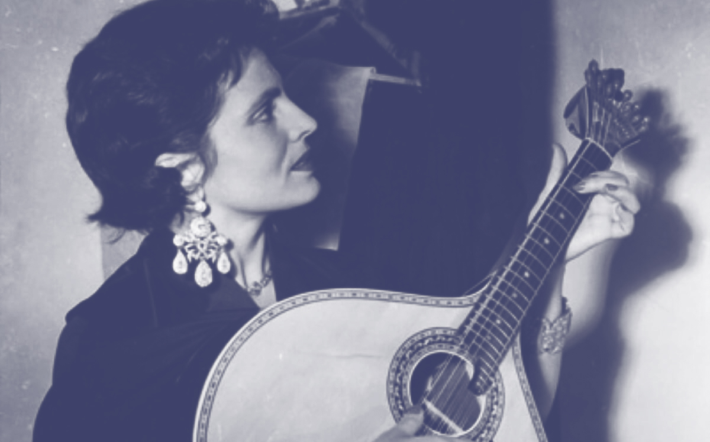

PASSADEIRA DE CORRIDA DOMÉSTICA
Atualmente, a sociedade atravessa uma pandemia, o que nos obriga a voltar as rotinas para o espaço doméstico. Com isto, a prática de desporto em ginásios deixa de ser aconselhada, e surge uma procura por alternativas para evitar o sedentarismo. Torna-se necessário fundir a atividade física com o conforto dos nossos lares. Equipamentos, anteriormente de dimensões “monstruosas” e carácter impessoal, passam a ser considerados elementos decorativos que se devem integrar no ambiente familiar.
As dimensões do objeto reduzem e a sua camuflagem torna-se essencial. Surge, assim, a passadeira KAMU, que se adapta ao espaço envolvente transformando-se numa mesa de apoio.
A ficha da passadeira recolhe para melhorar a sua dissimulação. No centro do plano inferior da estrutura, existe um pequeno compartimento para o efeito. É, apenas, necessário clicar no botão lateral, com o pé, para esta recolher. A sua estrutura em aço melhora, significativamente, tanto a estabilidade quanto a durabilidade do produto e, o amortecimento em borracha EVA torna este modelo capaz de reduzir o impacto dos movimentos nos joelhos e tornozelos, evitando possíveis lesões nas articulações. As pegas foram convertidas numa superfície fechada plana, que permite a colocação de objetos na mesma durante o treino. Atividade que pode atingir uma velocidade máxima de 12 km/h. Na frente desta extensão está, a todo comprimento, botão de emergência.
FLO
REIRA
Floreira, para espaços
urbanos, em ferro fundido.
Fusion 360 - Keyshot
MULTI
FUNÇÕES
Objeto obtido por chapas de
aço cortadas a laser, calandradas
e quinadas. Estas peças são
fixadas por solda e é lhes dado
um acabamento de pintura
eletroestática.
Este objeto possui 3
diferentes funções, uma casinha
para animais (gatos), um banco
de apoio e um caixote do lixo
para espaços como cozinhas.
Fusion 360 - Keyshot
Este objeto é feito de
cortiça maquinada.
O bloco de cortiça é tornedo
e fresado para obter a
forma desejada.
Este objeto foi projetado para
crianças.
Constituído por 4 peças
diferentes, que são fixadas por
meio de um íman.
Quando as peças estão juntas,
formam uma matrioska.
FOTOGRAFIA
ANALÓGICA
IDENTIDADE
VISUAL
Na sua essência, canta o sentimento, os desgostos de amor, a saudade de alguém que partiu, o quotidiano e as conquistas. Tudo começa aqui, na palavra Fado.
O Fado é unicamente cantado em Portugal, um país singular em todos os aspetos. É singular desde o seu norte ao seu sul, desde a sua vasta beleza natural às suas maravilhas gastronómicas. E paramos na gastronomia que tal como o Fado canta de forma singular. Esta marca pretende cantá-la promovendo o que é unicamente português, é o nosso Fado.

“O nosso FADO” é o nome da nossa marca; uma mercearia que celebra o melhor que Portugal tem para oferecer, priveligiando os pequenos produtores locais e projetos independentes que promovam um estilo de vida consciente.
Infografia criada de
acordo com o filme
The Grand Budapest Hotel,
de Wes Anderson.
O tema da infografia foram
os diferentes tipos de bigodes
de algumas personagens masculinas.

Este projeto consistiu em criar uma
identidade visual para a associação
de mulheres
agricultoras de Castelões.
Esta associação é responsável pela
produção de peças de linho feitas à
mão.
O desafio era combinar tipografia
com imagem estática (logótipo) e,
em seguida, animar a composição.